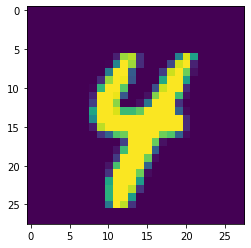

#import libraries
import torch
import torchvision
from torchvision import transforms, datasets
import torch.nn as nn
import torch.nn.functional as F
# download the MNIST data set
train = datasets.MNIST('', train=True, download=True,
transform=transforms.Compose(
[transforms.ToTensor()]))Downloading http://yann.lecun.com/exdb/mnist/train-images-idx3-ubyte.gz to MNIST/raw/train-images-idx3-ubyte.gzExtracting MNIST/raw/train-images-idx3-ubyte.gz to MNIST/raw
Downloading http://yann.lecun.com/exdb/mnist/train-labels-idx1-ubyte.gz to MNIST/raw/train-labels-idx1-ubyte.gzExtracting MNIST/raw/train-labels-idx1-ubyte.gz to MNIST/raw
Downloading http://yann.lecun.com/exdb/mnist/t10k-images-idx3-ubyte.gz to MNIST/raw/t10k-images-idx3-ubyte.gz
Extracting MNIST/raw/t10k-images-idx3-ubyte.gz to MNIST/raw
Downloading http://yann.lecun.com/exdb/mnist/t10k-labels-idx1-ubyte.gz to MNIST/raw/t10k-labels-idx1-ubyte.gzExtracting MNIST/raw/t10k-labels-idx1-ubyte.gz to MNIST/raw
Processing...
Done!/Users/mbanuelos/anaconda3/lib/python3.8/site-packages/torchvision/datasets/mnist.py:469: UserWarning: The given NumPy array is not writeable, and PyTorch does not support non-writeable tensors. This means you can write to the underlying (supposedly non-writeable) NumPy array using the tensor. You may want to copy the array to protect its data or make it writeable before converting it to a tensor. This type of warning will be suppressed for the rest of this program. (Triggered internally at /Users/distiller/project/conda/conda-bld/pytorch_1595629449223/work/torch/csrc/utils/tensor_numpy.cpp:141.)
return torch.from_numpy(parsed.astype(m[2], copy=False)).view(*s)test = datasets.MNIST('', train=False, download=True,
transform=transforms.Compose(
[transforms.ToTensor()]))# define train and test set with appropriate batch sizes
trainset = torch.utils.data.DataLoader(train, batch_size=10,
shuffle=True)
testset = torch.utils.data.DataLoader(test, batch_size=10,
shuffle=False)- Gradient Descent - use all the data to calculate the gradient
- Stochastic Gradient Descent (SGD) - use a random sample in the data to calculate the gradient
- Mini-Batch Descent - partition the data and then calculate the gradient w.r.t the data in the partition
- Once you have done this for all partitions, this is known as an epoch
class Net(nn.Module):
def __init__(self):
# inherit the class attributes of nn.module
super().__init__()
self.fc1 = nn.Linear(28*28, 64)
self.fc2 = nn.Linear(64, 64)
self.fc3 = nn.Linear(64, 64)
self.fc4 = nn.Linear(64, 10)
# define forward method where x is the data
def forward(self, x):
# output of layer 1
x = F.relu(self.fc1(x))
# output of layer 2
x = F.relu(self.fc2(x))
# output of layer 3
x = F.relu(self.fc3(x))
# output of layer 4
x = self.fc4(x)
return F.log_softmax(x, dim=1)model = Net()
print(model)Net(
(fc1): Linear(in_features=784, out_features=64, bias=True)
(fc2): Linear(in_features=64, out_features=64, bias=True)
(fc3): Linear(in_features=64, out_features=64, bias=True)
(fc4): Linear(in_features=64, out_features=10, bias=True)
)model.parameters()<generator object Module.parameters at 0x7fab712785f0># next, we need a loss function and an optimizer
import torch.optim as optim
loss_fun = nn.CrossEntropyLoss()
optimizer = optim.Adam(model.parameters(), lr=0.001)# let's run it -- let's train the model
for epoch in range(3):
for batch in trainset:
X, y = batch # X is the features, y is the labels
# zero gradients
model.zero_grad()
# input the data
out = model(X.view(-1,784))
# calculate the loss
loss = loss_fun(out, y)
# calculate gradients
loss.backward()
# update parameters
optimizer.step()
print(loss)tensor(0.0035, grad_fn=<NllLossBackward>)
tensor(0.0692, grad_fn=<NllLossBackward>)
tensor(0.0004, grad_fn=<NllLossBackward>)# let's check out the test accuracy
correct = 0
total = 0
# do not update the gradients anymore
with torch.no_grad():
for batch in testset:
X, y = batch
out = model(X.view(-1, 784))
for idx, i in enumerate(out):
#print(idx)
#print(i)
#print(y[idx])
#print(torch.argmax(i))
if torch.argmax(i) == y[idx]:
# add one to the number correct
correct += 1
# update your total
total += 1
print('Accuracy: ', correct/total)Accuracy: 0.9683import matplotlib.pyplot as plt
plt.imshow(X[7].view(28,28))
plt.show()
# what does the model predict?
pred1 = model(X[7].view(-1,784))[0]
prediction = torch.argmax(pred1)
print(prediction)tensor(4)